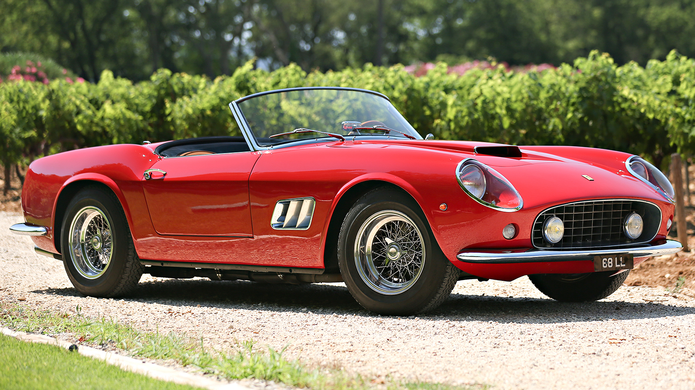
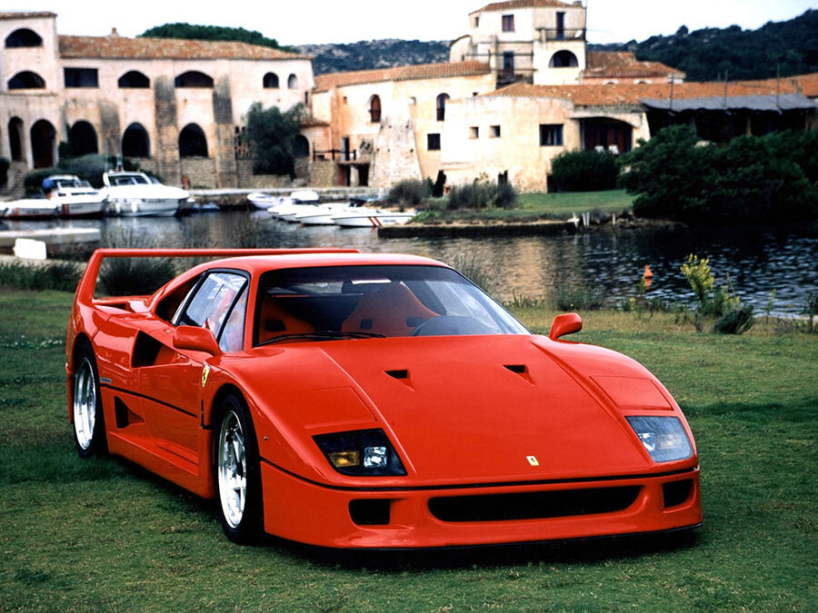
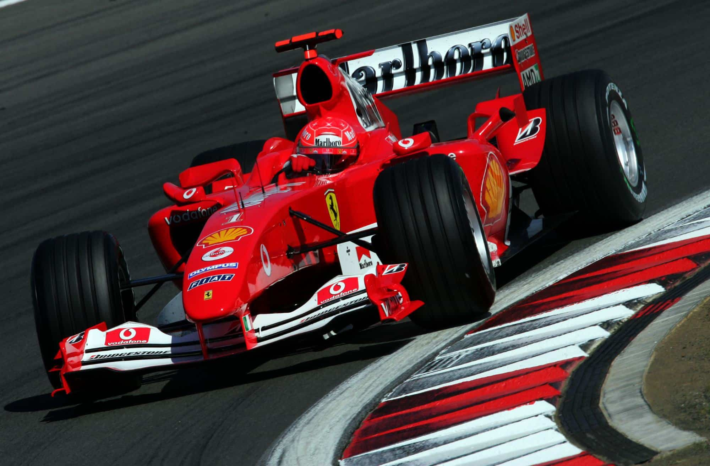
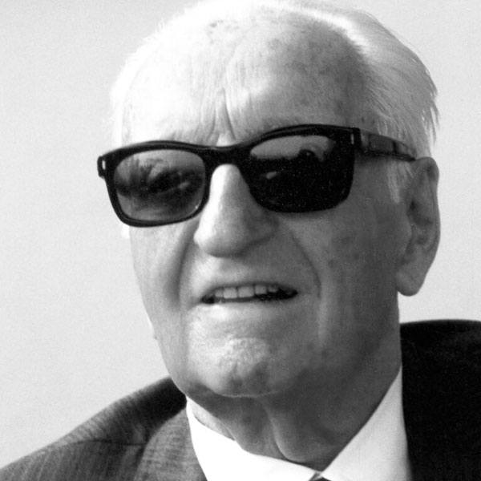

Enzo Ferrari in one of his beloved racecars

The Ferrari 250 GTO, a coveted early ferrari touring racecar that amazingly sold at action for 50 million dollars
The Ferrari 250 GT California Spyder, Made famous in the 1986 film Ferris Bueller's Day Off is derived from the GTO
The first ever supercar, notable for its use of carbon-fiber,
The Ferrari F40
Ferrari's famously for their dedication, the Tifosi, seen here celebrating a formula 1 victory for Ferrari in Italy
A Ferrari formula 1 car, the legendary F2004, a championship winning record breaker

The Ferrari SF90 Stradale, an example of Ferrari's modern design style reflecting Enzo's passion for performance
A more experienced Enzo Ferrari